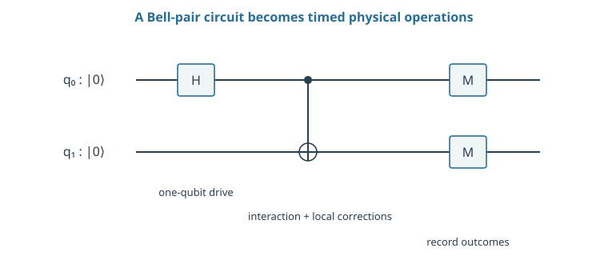
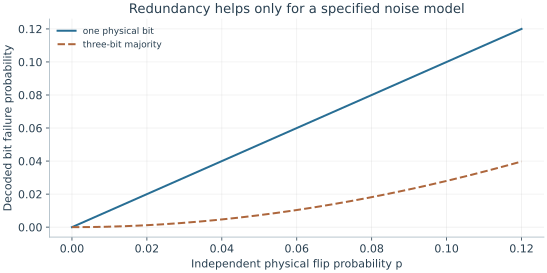

Starting point: Quantum Computing: states, gates, and measurement. The required physics is developed in context.
Anchor example: A pulse, an entangling operation, and a measured bit.
This lesson includes explanations, worked examples, and problems with solutions. Advanced results whose proofs are outside the chapter are identified explicitly.
So far, in quantum computing, a qubit has been a unit vector, a gate a unitary matrix, and a measurement a rule that returns a bit with a definite probability. None of these objects says what a laboratory must build. A circuit asks us to rotate a qubit, couple it to another, and measure. A device must supply a physical state, an interaction that lasts a definite time, and a detector. What has to be true of that hardware for the measured bit to mean what the algorithm predicts?
We follow the smallest complete task, preparing a Bell pair. Asking what its first gate requires physically forces a rule that turns a physical setting into a unitary, and that rule introduces the Hamiltonian and the matrix exponential. Asking how such a device fails then separates physical qubits from logical ones and gives a first error budget in time. Comparing two uses of the same rule, as gates and as continuous evolution, finally tells us what a complete specification of an experiment must contain.
Our first question is which two physical states a qubit is made of, and how a device is put into one of them.
1.1 Physical Requirements
The Bell-pair circuit has three kinds of element: a prepared input, gates, and a measurement. Each must be matched by something physical. Asking what the input states are shows that a real device can leave the qubit. Asking what makes a gate happen leads to the rule that generates every gate. Asking what a measurement must establish then shows why counting outcomes is not enough.
1.1.1 Encoding and initialization
Take the circuit that prepares a Bell pair. It starts both qubits in \(\ket{00}\), applies a Hadamard to the first, then applies a controlled-NOT. Its ideal output is \((\ket{00}+\ket{11})/\sqrt2\). What must a laboratory decide before it can run this circuit? The wires do not say which physical states are \(\ket0\) and \(\ket1\). They do not say how the device is put into \(\ket{00}\), or which physical influence changes each amplitude.
Suppose we pick two states of some physical system, an atom say, and call them \(\ket0\) and \(\ket1\). The atom has many other states, and nothing forbids the device from ending partly in one of them. So we write the prepared state as \(\ket\psi=a\ket0+b\ket1+c\ket\ell\), where \(\ket\ell\) is an unwanted extra state of the device. Normalization now reads \(|a|^2+|b|^2+|c|^2=1\).
What probability does the qubit description give this preparation? It cannot account for \(\ket\ell\), which is not one of its basis states. The probability that the device is in the qubit at all is \(1-|c|^2\). No later choice of the phases of \(a\) and \(b\) recovers population that sits outside the two chosen states.
So initialization is a physical operation with its own success criterion. The assignment of physical states to the labels \(0\) and \(1\) is called the encoding. Population that escapes the encoded pair is called leakage.
1.1.2 Control and measurement
Once the device is in \(\ket{00}\), what makes a Hadamard happen? Quantum computing gave each gate as a matrix, not as a physical process, and a physical process takes time. So we ask a sharper question. If a closed system is left under fixed conditions for a time \(t\), which unitary \(U(t)\) acts on it?
Suppose the conditions do not change with time. Then evolving for a time \(s\) and then for a time \(t\) must give the same result as evolving for \(t+s\) at once, because nothing distinguishes when the second stretch began. Doing nothing for no time changes nothing. So
\[U(t+s)=U(t)U(s),\qquad U(0)=I.\]
We also assume that \(U(t)\) changes smoothly with \(t\), since a fixed physical setting produces no sudden jumps.
What does this rule allow? Look at a very short time \(dt\). The step is then close to doing nothing, so we write \(U(dt)\simeq I-iK\,dt\) for some matrix \(K\). Unitarity constrains \(K\): to first order in \(dt\),
and this must equal \(I\). So \(K^\dagger=K\): the matrix \(K\) is Hermitian. The factor \(-i\) in our ansatz was chosen so that this condition comes out as Hermiticity.
The composition rule fixes the rest. It gives \(U(t+dt)=U(dt)U(t)\simeq U(t)-iK\,dt\,U(t)\), so \(dU/dt=-iKU\). Splitting \(t\) into \(n\) equal short steps gives \(U(t)\simeq(I-iKt/n)^n\), and the approximation becomes exact as \(n\to\infty\).
What is this limit? For a number \(k\), \((1-ikt/n)^n\) tends to \(e^{-ikt}\). For a square matrix \(A\) we define the matrix exponential by the same power series as for numbers:
We quote the standard fact that this series converges for every square matrix. Expanding \((I+A/n)^n\) by the binomial theorem gives the same series in the limit, so \(U(t)=e^{-iKt}\).
The series is rarely the easiest way to compute. A Hermitian matrix has an orthonormal basis of eigenvectors \(\ket j\) with real eigenvalues \(k_j\). On an eigenvector every power of \(K\) acts as the number \(k_j\), so \(e^{-iKt}\ket j=e^{-ik_jt}\ket j\). In its eigenbasis the exponential simply attaches a phase to each eigenvector. When a matrix satisfies \(P^2=I\), as a Pauli matrix does, splitting the series into even and odd powers gives
which is the rotation \(R_P(\theta)\) familiar from quantum computing.
So far \(K\) is pure mathematics: every Hermitian matrix generates some unitary family. Physics must say which one a given device has. We take this as a physical postulate.
Schrödinger evolution law. For a closed system, \(K=H/\hbar\). Here \(H\), the Hamiltonian, is the Hermitian matrix whose eigenvalues are the energies the system can be found to have. The constant \(\hbar=h/(2\pi)\), with \(h\) Planck's constant, converts energy times time into a dimensionless phase.
Then \(U(t)=e^{-iHt/\hbar}\), or equivalently \(i\hbar\,d\ket\psi/dt=H\ket\psi\). When the conditions vary in time, we apply the same law over short intervals in which \(H(t)\) is nearly constant and multiply the steps. A control field is anything that adds a term to \(H\) for a chosen duration. A gate is an energy applied for a time.
How do we know afterwards that the device did what the circuit said? A measurement connects the quantum state to a recorded signal whose distribution depends on that state. Suppose the Bell-pair device reports 00 and 11 equally often. A device that randomly prepares either \(\ket{00}\) or \(\ket{11}\) reports the same thing. The two differ only in the relative phase of \(\ket{00}\) and \(\ket{11}\), which a Z-basis measurement cannot see. So a Bell-pair test must also measure in rotated bases, where that phase changes the outcome probabilities.

The circuit is an ideal interface. A physical implementation must specify the encoded levels, reset, drive, interaction, and measurement. Time runs left to right.
Problem 1.1. Does a long coherence time alone make a good processor?
Worked solution
No. Initialization, control, coupling, readout, and scalable operation must also work. A perfectly isolated but inaccessible state cannot execute a useful program.
1.2 Computational Resources
We now know what a gate is physically, and that a device can lose population or phase. How much hardware does a reliable computation need, and how long may it run? Asking whether redundancy can lower the failure rate separates physical qubits from logical ones. Asking how failures accumulate with time and with routing gives a first error budget.
1.2.1 Physical and logical qubits
If one device fails with some probability, can several devices together fail less often? Try the simplest idea: copy a bit three times, using \(\ket{0_L}=\ket{000}\) and \(\ket{1_L}=\ket{111}\), and read it back by majority vote. Suppose each physical bit flips independently with probability \(p\). The vote fails only when two or three bits flip. Exactly two flip in three ways, each with probability \(p^2(1-p)\), so
\[p_L=3p^2(1-p)+p^3=3p^2-2p^3.\]
At \(p=0.01\) this gives \(p_L=0.000298\), assuming perfect encoding and decoding. Redundancy has lowered the failure rate by a factor of about thirty.
What did we protect against? Only bit flips. A phase error on one of the three systems still changes the sign between \(\ket{000}\) and \(\ket{111}\), and the vote cannot see it. We call each device a physical qubit. We call the protected two-state system that the encoding defines a logical qubit. Its quality is fixed by the encoding together with the error model it was designed for.
1.2.2 Time, connectivity, and error
Errors also accumulate with time. Suppose we prepare \(\ket1\), the higher-energy of the two encoded states, and wait. In many devices the excess energy leaks into the surroundings and the system falls to \(\ket0\). What survival law follows from the simplest assumption about this loss?
Assumption. In every short interval \(dt\), a device still in \(\ket1\) decays with the same probability \(dt/T_1\), however long it has already waited.
Then the probability \(p(t)\) of still being in \(\ket1\) obeys \(p(t+dt)=p(t)(1-dt/T_1)\), so \(dp/dt=-p/T_1\). The solution is \(p(t)=e^{-t/T_1}\). The constant \(T_1\) is called the relaxation time.
A gate of duration \(t_g\) then fails by relaxation with probability \(1-e^{-t_g/T_1}\simeq t_g/T_1\) when \(t_g\ll T_1\). A hypothetical 50 ns gate with \(T_1=100\) μs gives about \(5\times10^{-4}\). This is one contribution to the gate's error, not all of it.
Connectivity changes the cost too. If two qubits cannot interact directly, routing operations must first bring their states together, and each added operation is another chance to fail. For \(G\) independent opportunities, each failing with probability \(p\), the probability of at least one failure is \(1-(1-p)^G\). This assumes independent errors of equal harm, which real devices need not obey. So it is a model to test, not a general conversion from gate fidelity to circuit success.

Perfect majority decoding gives 3p²−2p³ under independent bit flips. This encoding does not protect arbitrary phase errors.
Problem 1.2. What assumption permits the estimate t/T1?
Worked solution
An exponential relaxation model and a duration much shorter than T1. It estimates decay of excited-state population, not every contribution to gate infidelity.
1.3 Implementation Models
We have one evolution rule, \(U=e^{-iHt/\hbar}\), and two ways to use it. A circuit asks for named gates, while a simulation asks for the dynamics of a given Hamiltonian. Asking how a Hamiltonian we cannot switch on all at once can be assembled from pieces we can switch on shows what the two uses share. Asking what someone else would need in order to predict our Bell experiment then gives a complete device-level specification.
1.3.1 Gate and analog evolution
Suppose a field adds \(H=\hbar\Omega X/2\) for a time \(t\). The evolution law gives \(e^{-i\Omega tX/2}\), which is the rotation \(R_X(\Omega t)\). We call it a gate when we choose the angle \(\Omega t\) to fit into a circuit. We call it analog evolution when we let a specified Hamiltonian act in order to study its dynamics. The physics is the same in both cases.
Often the Hamiltonian we want is a sum, \(H=H_A+H_B\), but the device can switch on only one term at a time. Can alternating short pulses reproduce the sum? Expand both exponentials for a short step \(\delta t\):
To first order this agrees with \(e^{-i(H_A+H_B)\delta t/\hbar}\). At second order the product contains \(H_AH_B\), while the exponential of the sum contains \((H_AH_B+H_BH_A)/2\). The two differ by \(-[H_A,H_B]\,\delta t^2/(2\hbar^2)\), where \([H_A,H_B]=H_AH_B-H_BH_A\). If the terms commute, the alternation is exact.
Otherwise a total time \(t\) uses \(t/\delta t\) steps, so these second-order differences add to an error of order \(t\,\delta t\) times the size of the commutator divided by \(\hbar^2\). Shorter steps reduce it. Each step, however, needs another switch of the controls, and every switch brings errors of its own.
1.3.2 A device-level specification
What must we write down so that someone else could predict the outcome of our Bell experiment? Each circuit element has become a physical requirement. We need the encoded states and the register order, and the initial populations. For each pulse we need its frequency, phase, and area. We need the coupling and the gate duration, and finally the measurement rule.
Every number carries units. We use angular frequencies such as \(\Omega\), in radians per second. A quoted value \(\Omega/(2\pi)=1\) MHz means \(\Omega=2\pi\times10^6\) s⁻¹.
How do we check the device against this prediction? We measure the populations and the phase-sensitive correlations. We repeat with nearby operations active, and we count any rejected trials. A mismatch between predicted and measured distributions may come from preparation, evolution, or readout. To tell which, we need a separate physical model of each stage.
Problem 1.3. Why distinguish physical and logical qubit counts?
Worked solution
Encoding, repeated error-detecting measurements, routing, and auxiliary-state preparation consume physical resources. The mapping depends on the code and target logical error.
The first of those models concerns the encoding itself. A physical system has many states, so when can two of them be treated as a qubit?
Worked model check. Three independent bits flip with probability 0.02. Find the majority-decoding failure probability, and name an error it does not protect against.
Worked solution
\(3(0.02)^2-2(0.02)^3=0.001184\). The toy repetition code protects bit values under the stated independent-flip model; it does not correct arbitrary phase errors.
These exercises draw on the whole chapter. Attempt each question before opening a hint, explain your reasoning, then compare it with the worked solution.
An initialization prepares \(\ket\psi=a\ket0+b\ket1+c\ket\ell\) with \(|a|^2=0.60\), \(|b|^2=0.38\), and \(|c|^2=0.02\), where \(\ket\ell\) is an unwanted level. What is the probability of being in the qubit subspace, and can any later qubit gate recover the missing population?
Hint 1
Normalization: \(|a|^2+|b|^2+|c|^2=1\).
Hint 2
A gate on the qubit subspace acts only on \(a\) and \(b\).
Worked solution
The qubit-subspace probability is \(0.60+0.38=0.98\). A gate defined on the qubit subspace rearranges \(a\) and \(b\) but leaves the \(\ket\ell\) component alone, so the \(2\%\) outside stays outside. Recovering it needs an operation that couples \(\ket\ell\) back, such as a leakage-reset pulse; initialization error has to be specified and corrected as a physical process, not just a qubit rotation.
A drive gives \(H=\hbar\Omega X/2\) with \(\Omega/(2\pi)=5\) MHz. Convert \(\Omega\) to radians per second and find the duration of a \(\pi\) rotation \(e^{-i\pi X/2}\). What duration gives a \(\pi/2\) rotation?
\(\Omega=2\pi\times5\times10^6\approx3.14\times10^7\) rad/s. The evolution \(e^{-i\Omega tX/2}\) is a rotation by angle \(\Omega t\), so a \(\pi\) rotation takes \(t=\pi/\Omega=1/(2\times5\ \text{MHz})=100\) ns, and a \(\pi/2\) rotation takes \(50\) ns. Confusing \(\Omega\) with \(\Omega/2\pi\) would give durations off by a factor of \(2\pi\), a common calibration mistake.
A qubit with \(T_1=100\) μs idles through \(200\) sequential gates of \(50\) ns each. Compare the exact decay probability \(1-e^{-t/T_1}\) with the linear estimate \(t/T_1\). When does the linear estimate become unreliable?
Hint 1
Total time is \(10\) μs.
Hint 2
\(1-e^{-x}\approx x-x^2/2\).
Worked solution
The total time is \(10\) μs, so \(t/T_1=0.1\). The exact decay probability is \(1-e^{-0.1}\approx0.095\), against the linear estimate \(0.100\). The difference, about \(x^2/2=0.005\), is small here but grows with \(x\); at \(t=T_1\) the linear estimate gives \(1\) while the true probability is \(0.63\). Use the exponential, or keep \(t/T_1\ll1\), when budgeting decay over long circuits.
A circuit has \(G=1000\) independent failure opportunities, each with probability \(p=10^{-3}\). (a) Compute the probability of at least one failure exactly and with the linear estimate \(Gp\). (b) For what \(p\) does the circuit succeed with probability \(0.9\)? (c) Name two reasons why real errors might not follow this model.
Hint 1
\(P_{\rm fail}=1-(1-p)^G\).
Hint 2
Solve \((1-p)^{1000}=0.9\).
Worked solution
(a) \(1-(0.999)^{1000}\approx0.632\), whereas \(Gp=1\), which is not even a probability. (b) \((1-p)^{1000}=0.9\) gives \(p\approx1.05\times10^{-4}\). (c) Errors can be correlated (a drifting calibration affects many gates the same way), and coherent errors add in amplitude rather than probability, so they can grow faster than this model predicts. Some errors are also harmless for a given circuit. The independent-failure model is a useful first estimate, not a law.
Two pulses implement \(H_A=\hbar\Omega X/2\) and \(H_B=\hbar\Omega Z/2\) alternately, each for time \(\delta t\), in place of the combined \(H_A+H_B\). (a) Using the second-order difference \(\frac{\delta t^2}{2\hbar^2}[H_A,H_B]\), estimate the size of the error for one step. (b) Evaluate it for \(\Omega\delta t=0.1\). (c) How does the error per unit of total time change if \(\delta t\) is halved?
Hint 1
\([X,Z]=-2iY\), so \(\|[X,Z]\|=2\).
Hint 2
\(\|[H_A,H_B]\|=\hbar^2\Omega^2/2\).
Worked solution
(a) \([H_A,H_B]=\frac{\hbar^2\Omega^2}{4}[X,Z]\), whose norm is \(\frac{\hbar^2\Omega^2}{2}\). The one-step error is about \(\frac{\delta t^2}{2\hbar^2}\cdot\frac{\hbar^2\Omega^2}{2}=\frac{(\Omega\delta t)^2}{4}\). (b) For \(\Omega\delta t=0.1\), about \(0.0025\) per step, which a direct matrix calculation confirms. (c) Over a fixed total time there are \(T/\delta t\) steps, so the total error scales as \(\delta t\): halving \(\delta t\) halves it, at the cost of twice as many switching events, each with its own control error.
A two-qubit device prepares \(\rho=\frac12\big(\ket{00}\bra{00}+\ket{11}\bra{11}+c\,\ket{00}\bra{11}+c\,\ket{11}\bra{00}\big)\) with real \(0\le c\le1\). (a) What do \(Z\)-basis population measurements show? (b) Show that \(\langle X\otimes X\rangle=c\). (c) Show that the fidelity with \((\ket{00}+\ket{11})/\sqrt2\) is \((1+c)/2\), and evaluate it for \(c=0\) and \(c=0.9\).
(a) \(00\) and \(11\) each with probability \(\frac12\), for every \(c\). (b) \(\mathrm{tr}[(X\otimes X)\rho]\) picks up the off-diagonal entries, because \(X\otimes X\) swaps \(\ket{00}\) and \(\ket{11}\): \(\frac12(c+c)=c\). (c) \(F=\frac12\big(\frac12+\frac12+c\big)=\frac{1+c}{2}\): \(\frac12\) for the classical mixture and \(0.95\) for \(c=0.9\). Population measurements fix only the diagonal; a parity measurement in a rotated basis is needed to certify the coherence that makes the state a Bell pair.
A ten-qubit circuit has depth \(100\), with \(50\) ns per layer, and every qubit has \(T_1=100\) μs. (a) Estimate the probability that no qubit decays during the circuit. (b) Routing on a restricted connectivity doubles the depth. Recompute. (c) What does this suggest about comparing devices only by gate count?
Hint 1
Each qubit is exposed for the whole circuit duration.
Hint 2
No decay on ten independent qubits: \(e^{-10t/T_1}\).
Worked solution
(a) The duration is \(5\) μs, so each qubit survives with probability \(e^{-0.05}\) and all ten with \(e^{-0.5}\approx0.61\). (b) At depth \(200\), \(10\) μs, the probability falls to \(e^{-1}\approx0.37\). (c) Routing adds gates, but it also lengthens the circuit, and every idle qubit decays during that extra time. Depth and duration, not just the number of gates, set the exposure to decoherence, so connectivity matters even if routing gates were perfect.
A student writes: “The three-bit repetition encoding protects a logical qubit; with \(p=0.01\) its error is only \(3\times10^{-4}\).” Apply a single \(Z\) error on the first physical qubit to the encoded state \(\alpha\ket{000}+\beta\ket{111}\). What happens, and what does the quoted error rate actually describe?
Hint 1
\(Z\ket1=-\ket1\).
Hint 2
Majority decoding looks only at bit values.
Worked solution
\(Z_1\) gives \(\alpha\ket{000}-\beta\ket{111}\): the logical relative phase has flipped. Every bit value is unchanged, so majority decoding sees nothing and the error passes through as a logical \(Z\), with probability equal to the single-qubit phase-error rate, not \(3\times10^{-4}\). The quoted figure is the logical error under independent bit flips only. A protection claim is meaningful only together with the error model it assumes.
A calibrated \(\pi\) pulse is too strong by \(1\%\): it rotates by \(1.01\pi\) about \(X\). (a) Find the error probability of one pulse, \(\sin^2(0.005\pi)\). (b) If the same pulse is applied \(N=100\) times where the ideal would be \(100\pi\), how large is the accumulated angle error and the resulting error probability? (c) Compare with the case where each pulse’s error has a random sign.
Hint 1
Over-rotations about the same axis add.
Hint 2
Random errors add like a random walk: total angle about \(\sqrt N\) times one error.
Worked solution
(a) A rotation error of \(0.01\pi\) leaves amplitude \(\sin(0.005\pi)\) in the wrong state: probability about \(2.5\times10^{-4}\). (b) \(100\) pulses accumulate an angle error of \(\pi\), so the qubit ends in the opposite state: error probability \(\sin^2(\pi/2)=1\). (c) With random signs, the typical accumulated angle is about \(\sqrt{100}\times0.01\pi=0.1\pi\), giving error probability about \(\sin^2(0.05\pi)\approx0.024\). Coherent (systematic) errors add in amplitude and can be far more damaging than the single-gate error rate suggests, which is why calibration must be checked with repeated sequences.
A Bell-pair task must succeed with probability at least \(0.99\). The circuit uses \(200\) one-qubit gates, \(100\) two-qubit gates, and \(10\) measurements. One-qubit gates fail with probability \(10^{-5}\) and measurements with \(2\times10^{-4}\). Using the small-error approximation in which failure probabilities add, find the largest two-qubit gate error rate that meets the target. What else must the specification state for this budget to be meaningful?
Hint 1
Sum the known contributions first.
Hint 2
Total budget \(0.01\).
Worked solution
The one-qubit gates contribute \(200\times10^{-5}=0.002\) and the measurements \(10\times2\times10^{-4}=0.002\), leaving \(0.006\) for \(100\) two-qubit gates: at most \(6\times10^{-5}\) each. The budget is meaningful only if the error rates were measured under the same conditions as the circuit (with neighbors active, the same timing, the same calibration), if errors are approximately independent and incoherent, and if idle decay, leakage, and crosstalk are included. Otherwise the sum understates the true failure probability.